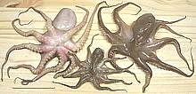

SAFARI
Users
General & History
Octopus has always been a favorite seafood in Italy, Greece and Japan but is known most to Americans as slices of tentacle on top of sushi rice.
Octopi like to hide which makes them fairly easy to catch. Clay jars are dropped on the sea floor to become octopus hiding "caves", then are pulled up with their occupant inside.
Buying Octopus
Octopus is not marketed by variety, at least not around here, only by size. The sizes most common in Southern California markets are "large", about 2 to 4 pounds and "baby" which may range from 0.1 ounce to 3 ounces.
Octopi around 4 pounds are also sold pre-cooked, generally cut to the weight you order. Uncooked, all sizes are usually sold with the head on but with innards, eyes and beak removed. The "baby" are sold by bulk weight, usually out of a pan where they are mixed with ice to keep them chilled. The larger are tightly bagged in transparent plastic, displayed head side down, and may be still frozen.
It is better to buy octopus that has been frozen because the freezing tenderizes them some and they will cook faster.
While every bit of the octopus you buy is edible, it looses a lot of water when it cooks and will shrink very significantly. While "baby" octopi may yield over 40% of their original weight, large octopi will yield about 30%, or if you cook long enough and rub off the skin and sucker disks it'll be more like 20%.
Cleaning & Cooking
Since Octopus is generally sold "cleaned" (beak, eyes and innards removed) there's no cleaning required and yield is just about 100% - of the solids. You're going to take a huge hit on weight because so much of an octopus is water and that gets squeezed out in the first few minutes of cooking. See the separate sub-articles for details on cooking octopi of different sizes.
Cooking Small Octopus The octopi shown here range from 0.5 ounces with a tentacle span of 6 inches to 2.8 ounces with a tentacle span of 11 inches. They are sold as "Baby Octopus" in Southern California with most between 1 and 2 ounces. Small octopi cook in less than 1/2 hour and are very good used in
salads, soups and appetizers. Yield is much better than for large
octopi.
Details and Cooking.
Cooking Large OctopusLarge octopus in Southern California markets range from about 1-1/2 pounds to 4-1/2 pounds - but when buying remember that it shrinks a great deal when cooked. The photo specimen weighted 2.2 pounds at purchase with a tentacle
span of about 59 inches, but by time I finished photographing it so
much water had drained out it was down to 1.8 pounds. It continued to
drain overnight in the fridge and was down to 1.5 pounds in the
morning. By time it was cooked long enough to eat (about 1-1/2 hours)
it was down to 10 ounces.
Details and Cooking.
Very Large OctopusThese would be octopi larger than 5 pounds. In Mediterranean cookbooks you'll find instructions for pounding these octopi or flogging a rock with them to tenderize. I have not been able to verify if that is really necessary because octopus weighing much over 4 pounds is not commonly available in Southern California markets. Sushi OctopusOctopus for sushi is generally purchased pre-cooked and frozen from a supplier in Japan. |
Health & Nutrition
Octopus gets an "A" grade for nutrition: very low fat, high in niacin, phosphorus, potassium, vitamin B6 and zinc; very high in iron, selenium and vitamin B12. The only negatives are sodium and cholesterol. Since it's been found very few people absorb significant cholesterol from food (it's manufactured within the body) this last is not a particularly serious point.